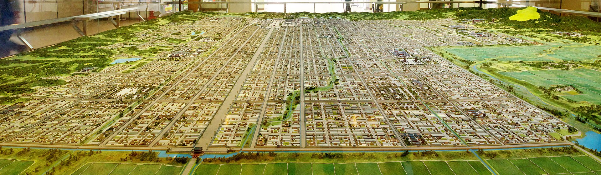
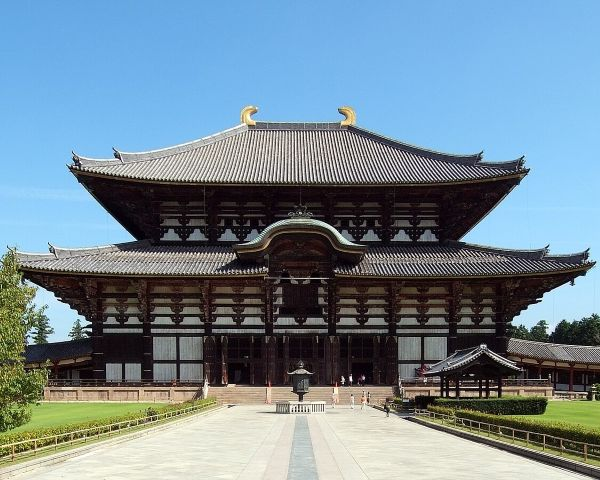
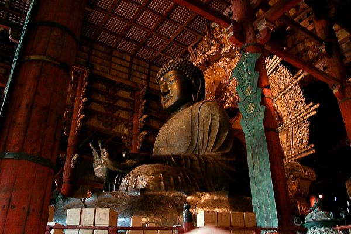
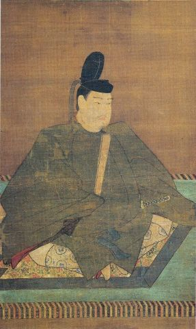

1/1000 Scale Model of Heijo-kyo in Nara City Hall
The Nara period began in 710, when the capital of Japan was moved to Heijo-kyo, which is modern day Nara. Nara was important as it was the first permanently established capital. In previous ages, owing to Shinto beliefs, the capital was moved after the death of an emperor with the result that the capital moved every few years with the accession of a new emperor. This was done because it was thought that the emperor's death was so polluting that it was inauspicious for the capital to remain the centre of government. However, Nara would break this cycle as it remained the capital through the reigns of many emperors.
The strong Chinese influence felt in the Asuka period was carried over into the Nara period, and this is most evident in Heijo-kyo itself. The city was laid out in a grid system mimicking that of Chang'an, the capital of Tang Dynasty China. Chinese beliefs in geomancy and directions are seen in the positioning of the Imperial Palace, which was located in the centre-north of the city facing the south, as the Japanese, following Chinese ideas, felt that the ruler must face south towards his subjects while his subjects faced reverently towards the north to their ruler.
The earliest surviving native historical texts, the Kojiki and the Nihon Shoki, were written during this period in 712 and 720 respectively. These histories serve the particular purpose of asserting the Yamato Dynasty's legitimacy as the rulers of Japan. It accomplishes this by giving the Yamato dynasty divine origins, claiming that the legendary first Emperor Jimmu, who according to the texts allegedly established the dynasty in 660 B.C., was a descendent of the Shinto sun goddess Amaterasu, who is a very important Shinto kami deity. These early Nara period histories cannot be fully trusted as they were written with the intention of emphasising the pre-eminence of the ruling dynasty, but the large number of surviving documents from this period give a better picture of the state of affairs of the government and various leading issues of the day.
An important problem that faced the Nara period government was the system of land tenure and ownership. The Taika reforms of the Asuka period put all land in Japan under the national ownership of the central government. Parcels of land was alloted to all peasant families in the country, which were to be cultivated and taxed for revenue. These lands were overseen by district officials and, higher up, court nobles. Some land was donated to Buddhist temples, some of which grew to immense power during the period. Some court families and Buddhist and other religious institutions were also granted certain tax immunities over the land they administered, allowing them to receive all the rice tax revenue. The granting of tax immunities to nobles and officials was widespread and meant that more taxable land was falling out of public, government ownership and was falling into private lands. They resulted in lower tax revenue being received by the central government in Nara. Buddhist institutions and powerful families at court, such as the Fujiwara, profited from these policies, and their power grew to such a point that they were beginning the threaten the prerogatives of the Imperial Court. Various factors such as poor harvests and extortionate tax rates imposed by some officials left some farming families impoverished and desperate. These families sometimes took the measure of commending their lands to local powerful clans in return for protection. The formation of these tax-exempt estates were an important feature in the history of land in Japan. These estates, called shoen would lead to the rise of a powerful local gentry in later years, which would lead in later years to the weakening of the Imperial institution and the emergence of provincial warriors known to us today as samurai.
Immediately, however, it was the overbearing influence of the Buddhist institutions that most unnerved the Court. A famous episode from this period centers around a Buddhist monk named Dokyo, who was a favourite of the Empress Koken, who would be the last Empress regnant for nearly a thousand years (for reasons that will become obvious shortly). Dokyo greatly enjoyed the favour of Koken, so much so that he rose meteorically in status and rank, eventually culminating in him being named Hōō, the highest ecclesiastical rank in the realm. Some stories claim they had an intimate relationship. Dokyo made a bold attempt to manipulate an oracle into stating that peace would prevail in the land only if he were made emperor. After Koken died in 770, power gradually returned to the Fujiwara clan, and Dokyo was banished. The power of the Buddhist institutions was concerning to the Court, and it was probably one of the reasons Emperor Kanmu moved the capital from Nara to Nagaoka-kyo in 784. This move was designed to escape the Buddhist establishment in Nara and restore political power to the Court. The new capital faced various natural disasters, such as earthquakes and floods (Nagaoka-kyo was built atop a flood plain), and the heir apparent fell ill. These misfortunes were attributed to malign spirits, and it was only ten years until the capital was moved to a new site a few miles north of Nara that would come to be called Heian-kyo. This 794 move marks the beginning of the long and classical Heian Period.
| Year | Event(s) |
|---|---|
| 710 | The capital is moved to Nara. Nara Period begins |
| 712 | The earliest surviving Japanese text, the Kojiki, is written |
| 720 | The Nihon Shoki is written. |
| 735-737 | A deadly smallpox epidemic spread throughout Japan which resulted in the deaths of approximately a third of the population |
| 740 | The capital is moved away from Nara (Heijo-kyo) for the first time |
| 745 | The capital is moved back to Nara after five years |
| 749-758 | Reign of Empress Koken |
| 752 | The Todai-ji is opened |
| 759 | Latest date for the publishing of the Man'yoshu |
| 764-770 | The second reign of Empress Koken, who takes the name Empress Shotoku, and the last reign of a female sovereign until the 17th century |
| 784 | Capital is moved by Emperor Kanmu to Nagaoka-kyo from Nara for good, presumably to escape Buddhist influence |
| 794 | The capital is moved to Heian-kyo (Kyoto). End of Nara Period and beginning of long Heian Period |

Todai-ji in Nara

Great Buddha of the Todai-ji
The Nara period, unsurprisingly, was dominated by Buddhist influence in the arts. Early in the period, the new religion was sponsored generously by the court and many important cultural artefacts show fine craftsmanship and reflect Buddhist themes. Emperor Shomu, who reigned from 724 to 749, was particularly enthusiastic about Buddhism and commisioned the building of Buddhist temples across the country and the creation of many Buddhist treasures. In particular, he ordered the construction of the iconic Todai-ji temple in Nara, which sourced labour from all across the country for its construction, which took many years. It officially opened in 752, the opening ceremony being attended by envoys and monks from China and even India. The temple is most notable for its Great Buddha Hall, which contains the 16-metre-high bronze image of the Buddha Vairocana. The Todai-ji tempple complex also included the Shōsō-in, which stored Buddhist treasures from the collection of Emperor Shomu. Some of these treasures survive to the present day, and they are designated as national treasures. The craftsmanship of these treasures such much Buddhist influence as well as Chinese and even Indian influence. It goes to show the eclectic mix of cultural imports to Japan, with distant cultures being made known in Japan thanks to the Silk Road.
The Nara period also sees the creation of the earliest court-sponsored anthology of Japanese poetry, the Man'yōshū. This anthology dates at the most latest 759, and contains over four thousand poems, commonly in the waka form, which follows restricts the number of syllables per line in a 5-7-5-7-7 format. The works of poetry contained in this book evokes a very native sentiment and expression; it is devoid of much Buddhist influence despite its dominance during the Nara period. Many of the poems dwell on themes, most focusing on a wide range of themes relating to love. Love, romance, parting, separation, secret night-time liaisons all feature as themes. Japanese poetry is very elegant and subtle, and much of the nuance of it takes years to master for the most cultivated court nobles and poets. Japanese poetry relies on puns, play on words, and certain poetic conventions. For example, certain places and objects have a certain mood or symbolism attached to them, such as pine trees symbolising longetivity. If a poet wants to evoke a certain mood, referencing a location or thing will do it. Unfortunately, much of this poetic nuance and subtlety is lost when translating these poems into English.
